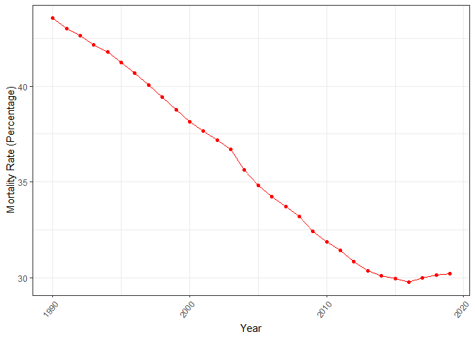

“dislib” or disease library is a package to provide information about the diseases and its mortality rate. The original data are from Our world in Data.
Installation
You can install the development version of dislib from GitHub with:
# install.packages("devtools")
devtools::install_github("etc5523-2022/rpkg-KrisanatA")Example
The mortality rate overtime for Cardiovascular diseases in Australia:
plot_dis("Cardiovascular diseases", "Australia")
What diseases has the highest mortality rate in Australia for 2019:
dis_summary("Australia", 2019)
#> # A tibble: 10 × 3
#> Rank disease Mortality_rate
#> <dbl> <chr> <dbl>
#> 1 1 Neoplasms 31.4
#> 2 2 Cardiovascular diseases 30.2
#> 3 3 Alzheimer's disease and other dementias 6.58
#> 4 4 Chronic respiratory diseases 6.56
#> 5 5 Digestive diseases 3.88
#> 6 6 Chronic kidney disease 3.05
#> 7 7 Lower respiratory infections 2.50
#> 8 8 Diabetes mellitus 2.48
#> 9 9 Parkinson's disease 1.41
#> 10 10 Cirrhosis and other chronic liver diseases 1.30